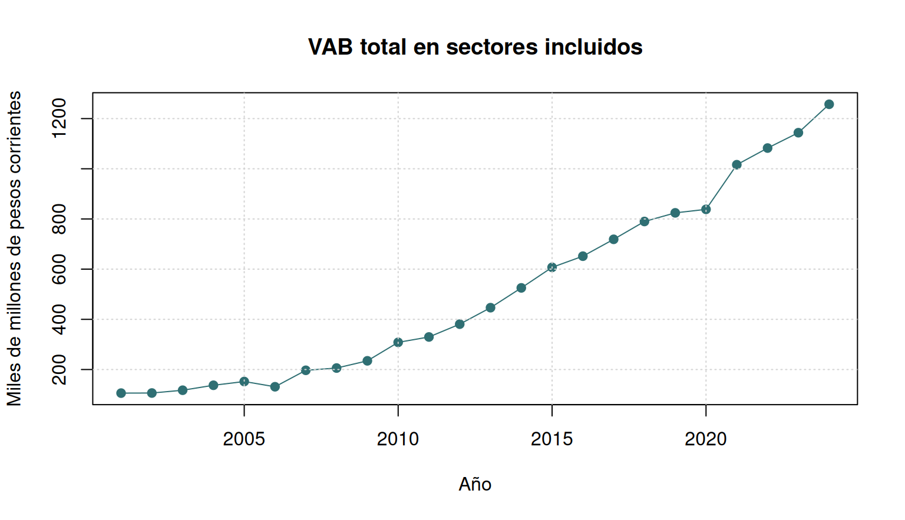
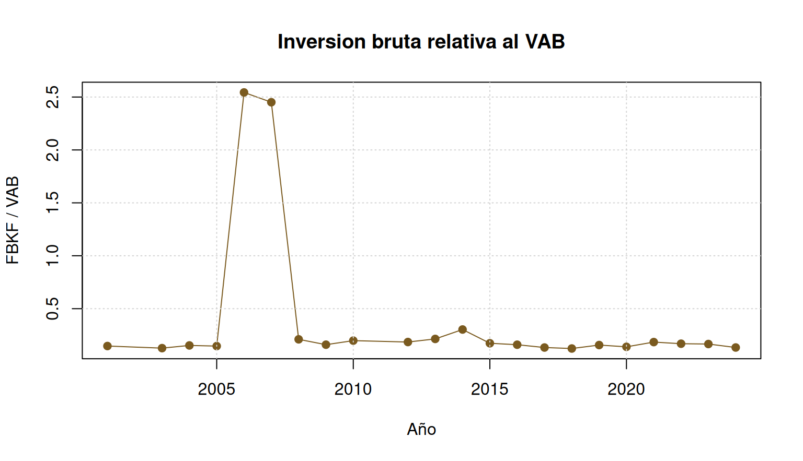

flowchart LR A[RAR INE originales] --> B[02_extract_c1.py] A --> C[03_extract_otros.py] B --> D[05_build_panel.py] C --> D D --> E[data/analysis-data/panel_eaae.csv] E --> F[06_validate_panel.py]
Minuta de avance: panel preliminar, variables solicitadas y decisiones pendientes
2026-05-07
Construir un pipeline reproducible para sistematizar la Encuesta Anual de Actividad Economica (EAAE) del INE Uruguay.
data/analysis-data/panel_eaae.csv.Los calculos finales previstos son de nivel aritmetico simple y los resultados esperados son principalmente series temporales y graficos descriptivos. Por eso, el desafio principal no esta en el calculo sino en procesar y homologar todas las fuentes consideradas, incluyendo las diferencias de formato internas a cada fuente, como ocurre con la EAAE.
data/input-data/eaae/
Encuesta_de_Actividad_Economica_2001.rar
Letra/
2 Digitos/
4 Digitos/
Encuesta_de_Actividad_Economica_2002-2010.rar
EAE_C1_YYYY.xls, EAE_C2_YYYY.xls, ...
Encuesta_de_Actividad_Economica_2012-2016.rar
EAE_C1.1_YYYY.xls, EAE_C2.1_YYYY.xls, ...
Encuesta_de_Actividad_Economica_2017-2024.rar
C1.1, C2.1, C6, C8 y otros cuadros.xls de formato legado dentro de RAR.flowchart LR A[RAR INE originales] --> B[02_extract_c1.py] A --> C[03_extract_otros.py] B --> D[05_build_panel.py] C --> D D --> E[data/analysis-data/panel_eaae.csv] E --> F[06_validate_panel.py]
| Variable solicitada | Variable en el panel | Estado | Cobertura |
|---|---|---|---|
| Stock de capital | stock_capital | Pendiente metodologico | Requiere decision de metodo |
| Valor agregado | vab_pp; vab_pb | Extraida | vab_pp: 2001-2024; vab_pb: 2017-2024 |
| Consumo de capital fijo | consumo_capital | Extraida | 2001-2024 |
| FBKF | fbcf | Extraida con faltantes | 2001, 2003-2010, 2012-2024 |
| Salarios | remuneraciones | Extraida | 2001-2024 |
| Impuestos | impuestos_netos | Extraida | 2001-2024 |
| Variable | Fuente principal | Cobertura |
|---|---|---|
vab_pp |
2001 C1 letra; C1/C1.1 | 2001-2024 |
vab_pb |
C1.1 | 2017-2024 |
remuneraciones |
2001 C1 letra; C1/C1.1 | 2001-2024 |
fbcf |
2001 C8; 2003-2007 C10; 2008-2024 C6 | parcial |
consumo_capital |
2001-2011 C2; 2012-2024 C2.1 | 2001-2024 |
impuestos_netos |
2001-2011 C2; 2012-2024 C2.1 | 2001-2024 |
CONTEXT.md.consumo_capital e impuestos_netos desde C2/C2.1.panel_eaae.csv.| Indicador | Valor |
|---|---|
| Archivo | data/analysis-data/panel_eaae.csv |
| Filas | 236 |
| Años | 24 |
| Primer año | 2001 |
| Ultimo año | 2024 |
| Sectores homologados | B, C, D_E, G, H_J, I, K, L_M_N, P, Q, R_S |
| Columnas | anno, seccion, epoca, ciiu_version, vbp_pp, vab_pp, vab_pb, remuneraciones, puestos_trabajo, fbcf, consumo_capital, impuestos_netos, excedente_bruto, part_salarial, productividad |
| anno | seccion | epoca | ciiu_version | vbp_pp | vab_pp | vab_pb | remuneraciones | puestos_trabajo | fbcf | consumo_capital | impuestos_netos | excedente_bruto | part_salarial | productividad |
|---|---|---|---|---|---|---|---|---|---|---|---|---|---|---|
| 2001 | C | 1 | Rev.3 | 89240215000 | 32030854000 | NA | 11462459000 | 113817 | 3539644000 | 3127411000 | 6829485000 | 20568395000 | 0.3578568 | 281424.16 |
| 2001 | D_E | 1 | Rev.3 | 13263801000 | 10613610000 | NA | 3599292000 | 14928 | 1873944000 | 1928502000 | 111535000 | 7014318000 | 0.3391204 | 710986.74 |
| 2001 | G | 1 | Rev.3 | 43491119000 | 24957624000 | NA | 10823278000 | 168971 | 2205103000 | 1670535000 | 1114492000 | 14134346000 | 0.4336662 | 147703.59 |
| 2001 | H_J | 1 | Rev.3 | 33566050000 | 13456590000 | NA | 6544975000 | 62695 | 3337731000 | 1509319000 | -154331000 | 6911615000 | 0.4863769 | 214635.78 |
| 2001 | I | 1 | Rev.3 | 6105764000 | 2287136000 | NA | 1474027000 | 26097 | 2415023000 | 446253000 | 39553000 | 813109000 | 0.6444859 | 87639.81 |
| 2001 | L_M_N | 1 | Rev.3 | 14837125000 | 8359713000 | NA | 3864244000 | 60371 | 908730000 | 360497000 | 82393000 | 4495469000 | 0.4622460 | 138472.33 |
| 2001 | P | 1 | Rev.3 | 3554736000 | 2803083000 | NA | 2188777000 | 30186 | 241141000 | 73414000 | 1245000 | 614306000 | 0.7808463 | 92860.37 |
| 2001 | Q | 1 | Rev.3 | 20736564000 | 11456887000 | NA | 8963981000 | 61559 | 1063210000 | 358413000 | 204284000 | 2492906000 | 0.7824098 | 186112.30 |


| Decision | Opciones sugeridas | Recomendacion tecnica |
|---|---|---|
stock_capital |
PIM; activos fijos EAAE; BCU/fuente externa | PIM con validacion externa |
| Stock inicial | año base 2001; promedio inicial; fuente externa | definir antes de calcular |
| Depreciacion | tasa unica; tasa por sector; tasa por activo | preferir por activo si hay insumos |
Faltantes fbcf |
dejar nulo; interpolar; fuente externa | no imputar sin decision |
| Caso | Situacion | Accion sugerida |
|---|---|---|
2002 fbcf |
RAR sin cuadro de FBKF/FBCF identificado | revisar fuente INE o anexo |
2011 fbcf |
RAR publicado trae solo C1 y C2 | revisar si existe publicacion complementaria |
2008 D_E |
vab_pp < remuneraciones |
confirmar contra XLS original |
| CIIU agregada | D_E, H_J, L_M_N, R_S son agregaciones |
validar con equipo |
stock_capital.fbcf 2002 y 2011.python3 command-files/processing-command-files/01_download.py --allow-insecure-ssl
python3 command-files/processing-command-files/02_extract_c1.py
python3 command-files/processing-command-files/03_extract_otros.py
python3 command-files/processing-command-files/05_build_panel.py --force
python3 command-files/processing-command-files/06_validate_panel.py
./.tools/bin/quarto render docs/minutes/20260507_minuta_eaae_pipeline.qmdEAAE Uruguay | Pipeline reproducible